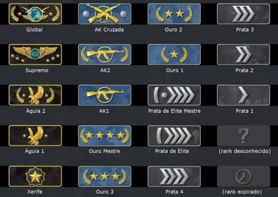

Uma vez um elefante cabeçudo muito sábio me disse:
“O CS pode ser um pouco duro as vezes"
-Gaules
Mas aqui, para a alegria do brasileirinho você verá várias dicas e segredos gigatonicos para se tornar um jogador minimamente bom.
Sistema de Patentes
O sistema de patentes do CS não nos mostra se estamos perto ou não de subir de patente,
algo que deveria ser o básico, portanto há diversas lendas de qual seria o método mais rápido de “upar”. Porem aqui, em um site completamente desconhecido e baseado em nada, você definitivamente irá descobrir o melhor método.
ou não
Na prática se você ganhar diversas partidas seguidas estando em uma posição alta você upara bem rápido, porém, não há nenhum profissional aqui. Então, o método mais eficaz é simplesmente jogar pouco. Testado por mim mesmo, só em fevereiro
eu fui do ouro 1 para ak 1, jogando 2 partidas a cada 2 dias. Teste esse método e prove que não estou maluco. Mas se você não ganhar nenhuma e
ficar em último em todas não jeito.
Utilitários
A mecânica mais importante do jogo. Pode colocar o melhor jogador do mundo contra um nerdola das smokes, que o nerdola irá ganhar ou não.
E temos aqui smokes essenciais para a mirage, um dos mapas mais jogados.
E aqui as smokes mais nerdolas que você irá ver na sua vida.
Granada Trivelada
E como último ensinamento temos aqui a granada trivelada, que não é apenas uma jogada plástica, ela é muito útil por exemplo para conseguir cegar inimigos sem se expor.